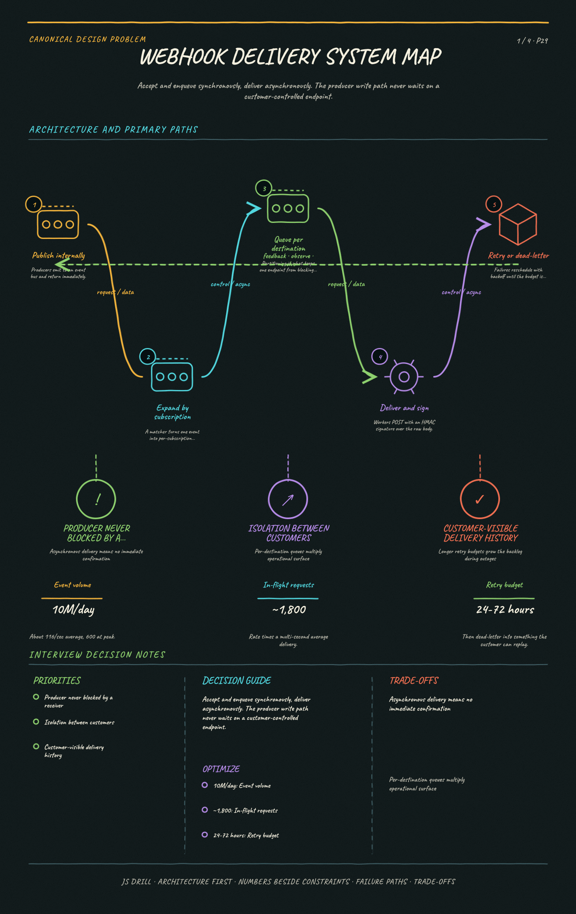
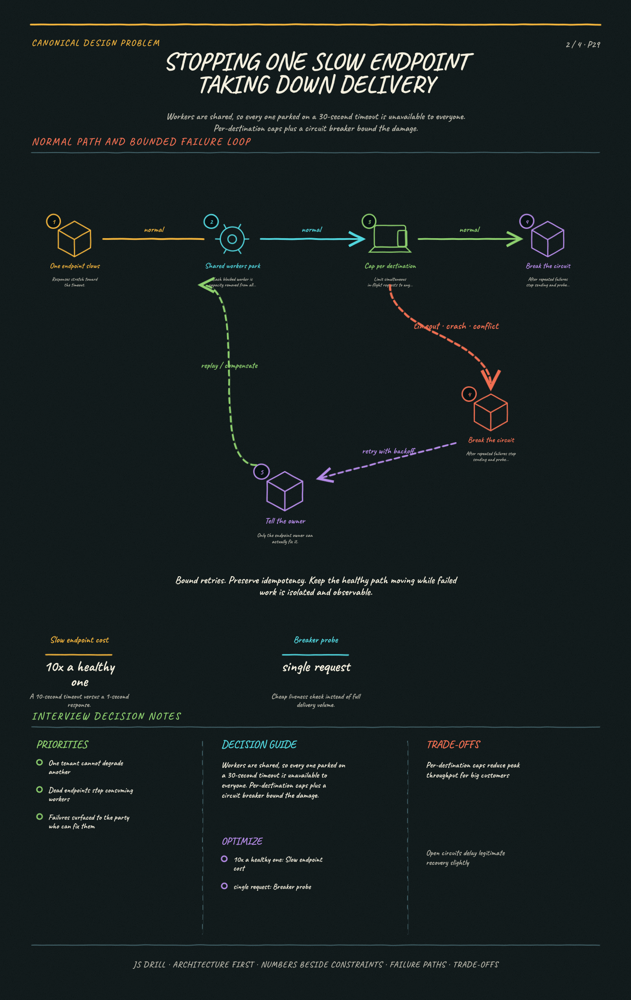
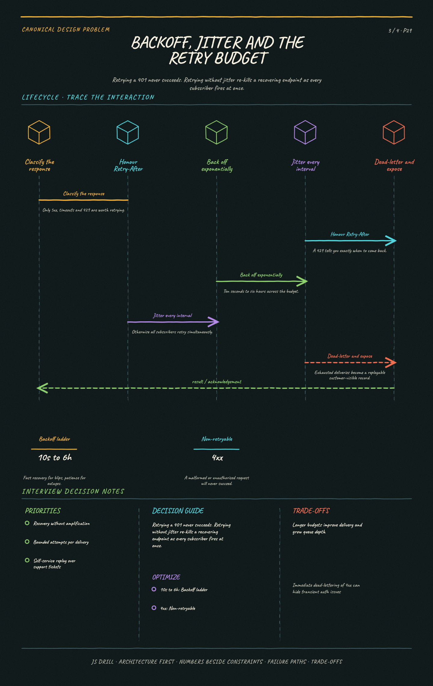

Deliver events to thousands of customer-controlled HTTP endpoints reliably, when those endpoints are slow, down, or wrong. The signature challenge is that the receiver is outside your control, so the design is almost entirely about failure isolation and retry discipline.
Canonical Design Problems9 questions
Results carried by this link
The brief
Functional requirements
Customers register endpoint URLs and subscribe to event types; deliver matching events; expose delivery history and failure replay.
The receiver is a third party you don't control — it can be slow, down, misconfigured, or return 200 while ignoring the body.
At-least-once with bounded retries; best-effort ordering plus an event timestamp (strict ordering conflicts with parallel delivery and retries).
Isolation is the headline requirement: one unhealthy endpoint must not affect other customers' delivery.
Receivers must be able to verify authenticity, and the system must not be usable to attack internal services (SSRF).
Rate isn't the constraint, CONCURRENCY is: 600/s at ~3s average is ~1,800 in-flight requests
The failing tail is what hurts: an endpoint timing out at 10s holds a worker ten times longer than a healthy one
Retries add load exactly when things are worst — a downstream outage multiplies attempts across every subscriber at once
Deliver within seconds for healthy endpoints; producers must never block on delivery
Key ideas
Every failure mode belongs to someone else's server — the design is failure isolation first and throughput second.
Accept and enqueue synchronously, deliver asynchronously; a producer must never wait on a customer's endpoint.
One slow endpoint must not delay other customers, which means per-destination concurrency and queues, not one global worker pool.
Retries need exponential backoff with jitter and a bounded budget, then a dead-letter path the customer can replay from.
Circuit-break per endpoint: after sustained failure, stop sending and probe periodically rather than hammering a dead host.
Signatures with a timestamp are what make a webhook trustworthy — HMAC over the raw body, with the timestamp inside the signed payload to stop replay.
Delivery is at-least-once, so the contract must tell receivers to be idempotent and give them an event id to deduplicate on.
Diagrams
4 study sheets · 4 authored diagrams (source below, rendered in the app).

Webhook delivery system mapSystem mapEstablish the synchronous/asynchronous boundary.Open the full-size image

Stopping one slow endpoint taking down deliveryFailureShow head-of-line blocking across tenants and the two fixes.Open the full-size image

Backoff, jitter and the retry budgetLifecycleShow that response class decides whether a retry makes sense at all.Open the full-size imageSigning outbound, and not becoming an SSRF vectorMechanismSeparate two security concerns that are easy to conflate.Open the full-size image
High-level architecture mermaidoverview
Accept synchronously, deliver asynchronously — the producer's write path never touches a customer-controlled endpoint.
flowchart LR
P(["Producer"]) -->|"publish"| BUS[["Event bus"]]
BUS --> M["Matcher<br/>expand by subscription"]
M --> Q[["Delivery queue<br/>partitioned per destination"]]
Q --> W["Worker pool<br/>per-endpoint concurrency cap"]
W -->|"HTTPS POST<br/>+ HMAC signature"| EP(["Customer endpoint"])
W -->|"failure"| RS["Retry scheduler<br/>delay queue"]
RS --> Q
RS -->|"budget exhausted"| DLQ[("Dead letter<br/>customer-replayable")]
Stopping one slow endpoint taking down delivery mermaidfailure
A shared pool lets a 30-second endpoint consume workers for everyone; per-destination caps plus a breaker bound the damage.
flowchart TD
SLOW(["endpoint takes 30s"]) --> BAD{"shared worker pool?"}
BAD -->|"yes — naive"| BLOCK["workers park on timeouts"]
BLOCK --> HOL(["unrelated customers<br/>queue behind it"])
BAD -->|"no — isolated"| CAP["per-destination<br/>concurrency cap"]
CAP --> CB{"N consecutive failures?"}
CB -->|"yes"| OPEN["open circuit:<br/>stop sending, probe periodically"]
CB -->|"no"| KEEP(["keep delivering"])
OPEN --> NOTIFY(["notify endpoint owner"])
Backoff, jitter and the retry budget mermaidlifecycle
Classify before retrying, jitter so subscribers don't re-kill a recovering endpoint, and dead-letter into something the customer can replay.
flowchart TD
R(["response"]) --> C{"classify"}
C -->|"2xx"| OK(["delivered"])
C -->|"4xx — 400, 401"| DEAD(["dead-letter immediately"])
C -->|"429"| RA["honour Retry-After"]
C -->|"5xx or timeout"| BO["backoff: 10s, 30s, 2m,<br/>10m, 1h, 6h + jitter"]
RA --> BUD
BO --> BUD{"within 24-72h budget?"}
BUD -->|"yes"| RETRY(["schedule next attempt"])
BUD -->|"no"| DEAD
DEAD --> REPLAY(["customer-visible log<br/>with replay button"])
Signing outbound, and not becoming an SSRF vector mermaidmechanism
Signatures prove the sender to the receiver; they do nothing to protect you from the URL the customer chose — that needs IP validation after every redirect.
flowchart TD
E(["event to deliver"]) --> SIG["HMAC-SHA256 over<br/>timestamp + raw body"]
SIG --> HDR["signature + timestamp headers"]
HDR --> VAL{"validate destination"}
VAL -->|"resolve DNS"| IP{"public IP?"}
IP -->|"private, loopback,<br/>link-local"| REJ(["reject — SSRF"])
IP -->|"yes"| SEND["POST"]
SEND --> RED{"redirect?"}
RED -->|"yes"| VAL
RED -->|"no"| DONE(["receiver verifies<br/>signature + timestamp age"])
Questions 9
Positions 1–9 of the code. Open questions are answered out loud and self-graded, so their characters are Y / p / n rather than option letters.
Scope a webhook delivery system. What are the functional requirements, and what makes the non-functional side unusual?
Points a strong answer hits:
Functional: customers register endpoint URLs and subscribe to event types; the system delivers matching events; customers can see delivery history and replay failures.
The unusual property: the receiver is a third party you don't control. It can be slow, down, misconfigured, or return 200 while ignoring the body.
So the guarantee is at-least-once with bounded retries — not exactly-once, and not best-effort.
Ordering: state clearly whether per-subscription ordering is guaranteed. Strict ordering conflicts with parallel delivery and retries, so most systems offer at-most best-effort ordering plus an event timestamp.
Non-functional: an unhealthy endpoint must not affect other customers' delivery — isolation is the headline requirement.
Latency: deliver within seconds for healthy endpoints; producers must never block on delivery.
Security: receivers must be able to verify authenticity, and the system must not be usable to attack internal services (SSRF).
Observability for the customer: they need to see why a delivery failed, or every failure becomes a support ticket.
Model answer: Customers register endpoints, subscribe to event types, and we deliver matching events with visible history and replay. What makes it unusual is that the receiver is someone else's server — it can be slow, down, misconfigured, or return 200 while silently discarding the body. So the guarantee is at-least-once with bounded retries. I'd pin down ordering early: strict per-subscription ordering fights with parallel delivery and retries, so most systems promise best-effort ordering plus a timestamp and let receivers sort. The headline non-functional requirement is isolation — one broken endpoint must not delay anyone else. And two things people skip: receivers need a way to verify authenticity, and the system must not become an SSRF vector into internal networks.
Fan-out multiplies it: one event may match several subscriptions, so deliveries can be several times the event count.
The real cost is concurrency, not rate. Delivery is network-bound with a multi-second timeout, so Little's Law again: 600/sec × 3s average = ~1,800 in-flight requests.
But failing endpoints dominate: an endpoint that times out at 10s holds a worker 10x longer than a healthy one, so a small number of bad endpoints can consume most of the capacity.
Retries add load precisely when things are worst — a downstream outage multiplies attempts across all its subscribers simultaneously.
Storage: delivery attempt history at ~1 KB per attempt with retries is on the order of tens of GB/day; retain recent in a queryable store, archive the rest.
Payload size matters for memory: if payloads are large, store them once and have workers fetch by reference rather than carrying them through the queue.
Model answer: 10M/day is only about 116/sec average, maybe 600 at peak — modest. Fan-out multiplies that, since one event can match several subscriptions. But rate isn't the constraint: delivery is network-bound with multi-second timeouts, so it's concurrency. At 600/sec and 3 seconds average that's ~1,800 in-flight requests. The number that actually hurts is the failing tail — an endpoint timing out at 10 seconds holds a worker ten times longer than a healthy one, so a handful of bad endpoints can eat most of the fleet. And retries add load exactly when things are worst, because a downstream outage multiplies attempts across every subscriber at once. That combination is the whole argument for per-destination isolation.
Design the architecture and the delivery request itself. What does the receiver actually get?
Points a strong answer hits:
Producers publish to an internal event bus; a matcher expands each event into deliveries by looking up active subscriptions for that event type.
Deliveries land on a queue; a worker pool sends HTTP POSTs and records outcomes; failures go to a retry scheduler (a delay queue keyed by next-attempt time).
Accept-and-enqueue is synchronous and fast; everything after it is asynchronous. The producer's write path never touches a customer endpoint.
The POST carries: event id, event type, timestamp, the payload, and signature headers.
Signature: HMAC-SHA256 over the timestamp concatenated with the raw request body, using a per-endpoint secret. Sign the raw bytes, not a re-serialized object, or the receiver can't reproduce it.
Include the timestamp inside the signed material and have receivers reject old timestamps — that's what prevents replay of a captured delivery.
Support secret rotation by allowing two active secrets and sending both signatures during the overlap window.
Success is a 2xx within the timeout; anything else is a failure. Document that clearly, since a receiver returning 302 or 200-with-error-body is a common source of confusion.
Model answer: Producers publish to an internal bus, a matcher expands each event into per-subscription deliveries, and those land on a queue drained by a worker pool, with failures going to a delay queue keyed by next attempt. The important boundary is that accept-and-enqueue is synchronous and everything after is not — the producer's write path never touches a customer's endpoint. The POST itself carries an event id, type, timestamp, payload and signature headers, where the signature is HMAC-SHA256 over the timestamp plus the raw body using a per-endpoint secret. Two details that matter: sign the raw bytes rather than a re-serialized object, or the receiver can't reproduce the signature; and put the timestamp inside the signed material so a captured delivery can't be replayed later. I'd also support two active secrets for rotation.
One customer's endpoint starts taking 30 seconds to respond. With a single shared worker pool, what happens to everyone else?
A Nothing — the queue automatically reorders to prioritize fast endpoints
B Workers block on that endpoint and the pool is progressively consumed by one slow destination, so unrelated customers' deliveries queue behind it correct
C Only that customer's deliveries are delayed, because HTTP connections are per-host
D Throughput drops by exactly the fraction of traffic that customer represents
Why: This is head-of-line blocking across tenants, and it's the defining failure of a naive design. Workers are a shared resource; every one that's parked waiting on a 30-second timeout is unavailable to everyone else. A customer with 1% of the traffic but the slowest endpoint can occupy a disproportionate share of the pool. The fixes are per-destination concurrency limits (a cap on simultaneous in-flight requests per endpoint), separate queues or partitions per destination, and aggressive timeouts — plus a circuit breaker so a persistently dead endpoint stops consuming workers at all.
Deep dive: design the retry policy. How many, how far apart, and when do you stop?
Points a strong answer hits:
Exponential backoff: intervals roughly doubling — 10s, 30s, 2m, 10m, 1h, 6h — so a brief blip recovers fast and a long outage isn't hammered.
Jitter is mandatory. Without it, every subscriber of a recovering endpoint retries at the same instant and re-fails it — a self-inflicted thundering herd.
Bound the total window (e.g. 24-72 hours), then dead-letter. Unbounded retries mean an abandoned endpoint accrues attempts forever.
Distinguish response classes: 5xx and timeouts are retryable; 4xx generally is not, because retrying a 400 or 401 will never succeed. 429 is special — retry, and honour Retry-After.
Circuit breaker per endpoint: after N consecutive failures, open the circuit, stop delivering, and probe periodically with a single request. This is what stops a dead endpoint from consuming capacity for hours.
While the circuit is open, queue or drop by policy — and tell the customer, because silently dropping is what generates the 'we never got the webhook' escalation.
Dead-lettered events must be inspectable and replayable by the customer, so recovery doesn't require a support ticket.
Notify the endpoint owner on sustained failure — email or dashboard — since they're the only one who can fix it.
Model answer: Exponential backoff roughly doubling — ten seconds, thirty, two minutes, ten, an hour, six hours — so a blip recovers quickly and a real outage isn't hammered. Jitter is mandatory, not optional: without it every subscriber of a recovering endpoint retries at the same instant and knocks it over again. I'd bound the total window at a day or three then dead-letter, because unbounded retries mean an abandoned endpoint accrues attempts forever. Classify responses: 5xx and timeouts retry, 4xx generally doesn't since a 401 will never succeed, and 429 retries while honouring Retry-After. On top of that a per-endpoint circuit breaker — after N consecutive failures stop delivering and probe with a single request — which is what stops one dead endpoint consuming workers for hours. And dead-lettered events must be inspectable and replayable by the customer, or every recovery becomes a support ticket.
A customer registers http://169.254.169.254/latest/meta-data/ as their webhook URL. What is the risk and the mitigation?
A None — the delivery will simply fail and be retried
B Server-side request forgery: your workers make requests from inside your network, so a customer-supplied URL can reach cloud metadata endpoints and internal services; mitigate by resolving and validating the destination IP against a blocklist and re-checking after redirects correct
C It only wastes retry budget, so a rate limit is sufficient
D The signature check will reject it before the request is made
Why: The delivery worker is a request originating inside your infrastructure, aimed at a URL the customer chose — a textbook SSRF vector. Cloud metadata endpoints and internal admin services are the obvious targets. Mitigation is layered: require HTTPS and public hostnames, resolve the DNS name and reject private, loopback and link-local ranges, re-validate after every redirect (a public URL can 302 to an internal one), and ideally egress from an isolated network with no route to internal services. Signatures don't help — they authenticate you to the receiver, not the receiver to you.
Deep dive: what do you promise about ordering and duplicates, and what must the receiver do?
Points a strong answer hits:
Duplicates are unavoidable: a receiver can process a delivery and have its 200 lost in transit, so the sender retries something already applied. That's at-least-once, and no protocol removes it.
So the contract is explicit: every delivery carries a stable event id, and receivers must deduplicate on it.
Ordering is the harder promise. Parallel delivery plus retries means event 2 can arrive before event 1 whenever event 1 needed a retry.
Options: (a) don't promise ordering — include a timestamp and sequence number and let receivers reconcile; (b) promise per-subscription ordering by serializing delivery per destination and blocking on failure.
Option (b) has a severe cost: a single failing event blocks every subsequent event to that endpoint — head-of-line blocking, now visible to the customer as a total stall.
So most systems choose (a) and make the reconciliation data available. Say which you chose and why.
A useful middle ground: send the event id and let the receiver fetch current state from your API, making the webhook a notification rather than the source of truth. That sidesteps both ordering and staleness.
Document all of this in the receiver-facing contract — undocumented at-least-once semantics become production bugs in the customer's system.
Model answer: Duplicates are unavoidable — a receiver can process a delivery and have its 200 lost, so we retry something already applied. That's at-least-once, and no protocol removes it, so the contract says every delivery carries a stable event id and receivers must deduplicate on it. Ordering is the harder call. Parallel delivery plus retries means event 2 can beat event 1 whenever event 1 retried. I'd choose not to promise ordering, and include a timestamp and sequence number so receivers can reconcile, because the alternative — serializing per destination and blocking on failure — means one bad event stalls every subsequent event to that customer. There's a nice middle ground worth mentioning: make the webhook a notification carrying an id, and have the receiver fetch current state from the API. That sidesteps ordering and staleness together.
Deep dive: how do subscriptions get matched to events, and what happens when one event matches thousands of them?
Points a strong answer hits:
Each subscription declares an endpoint plus a filter — event types, and often a resource scope or attribute predicate.
Matching is the fan-out step: one published event expands into N deliveries, and N is entirely customer-controlled.
Index subscriptions by event type so matching is a lookup rather than a scan over every subscription in the system.
The pathological case: a popular event type with thousands of subscribers produces an instant burst of thousands of deliveries from a single publish.
Expand lazily rather than eagerly — write one fan-out task and let workers page through matching subscriptions, so a single event can't enqueue 50,000 rows synchronously.
Rate-limit the expansion so a burst is smoothed across seconds rather than hitting the queue in one spike.
Filters should be evaluated before enqueueing, not at delivery time, or you pay queue and worker cost for deliveries that were never going to be sent.
Subscription changes need care mid-flight: an event already expanded shouldn't be delivered to a subscription deleted a second ago, so check subscription validity at delivery as well as at match.
Wildcard and prefix subscriptions ('all events on this resource') multiply fan-out and deserve their own limits.
Model answer: A subscription is an endpoint plus a filter — event types and usually a resource scope — and matching is indexed by event type so it's a lookup rather than a scan across every subscription. The interesting part is that fan-out is customer-controlled: one publish can match thousands of subscriptions and produce an instant burst. So I'd expand lazily, writing a single fan-out task that workers page through, rather than enqueueing fifty thousand rows synchronously from one event, and rate-limit the expansion so the burst smooths across seconds. Filters get evaluated before enqueueing, not at delivery, or you pay queue and worker cost for deliveries that were never going to be sent. One subtlety: a subscription deleted after expansion but before delivery should not receive the event, so validity gets checked at delivery too, not only at match time.
Staff-level wrap-up: what breaks at scale, and what would you expose to customers?
Points a strong answer hits:
Fan-out storms: one event matching many subscriptions creates a burst; rate-limit per destination and smooth the expansion rather than enqueueing everything instantly.
Noisy tenants: cap per-customer in-flight deliveries so one high-volume account can't monopolize workers.
Poison payloads: an event that reliably crashes a receiver retries its full budget every time. Circuit-breaking and dead-lettering bound that.
Queue growth during a broad outage — if a popular platform is down, every subscription to it retries. Watch queue depth and retry-share of total traffic.
Monitor per-endpoint success rate, p99 delivery latency, circuit-breaker state distribution, and dead-letter volume. Aggregate success rate hides a few dead endpoints entirely.
Customer-facing observability is a feature, not a nicety: a delivery log with request/response, status, attempt count and a replay button removes most support load.
Secret rotation and endpoint URL changes must be safe live operations, not migrations.
Multi-region: deliver from the region nearest the customer's endpoint if latency matters, but keep the retry schedule authoritative in one place so a failover doesn't duplicate the entire backlog.
Model answer: Fan-out storms are the first — one event matching thousands of subscriptions creates an instant burst, so I'd smooth the expansion and rate-limit per destination rather than enqueueing it all at once. Then noisy tenants, capped by per-customer in-flight limits, and poison payloads that burn a full retry budget every time, bounded by circuit-breaking and dead-lettering. The metric that matters most is per-endpoint success rate, because an aggregate number hides a few completely dead endpoints. I'd also watch retry share of total traffic — when that climbs, something broad is failing. And I'd treat customer-facing observability as a feature: a delivery log with request, response, attempt count and a replay button removes most of the support load, because otherwise every failure becomes a ticket where the customer and I are both guessing.
Reading the s= code
If the URL you opened has an s= parameter, it is a result set: one character per question, in the order the questions appear on this page. Uppercase means credit, lowercase means no credit. The letter is the option index shown here — A is the first option listed.
Character
Meaning
A B C D
multiple choice — picked this option, correct
a b c d
multiple choice — picked this option, wrong
Y
open / typed / fill-in — got it
p
open — partial credit
n
open / typed / fill-in — missed
-
not attempted
One segment: every question on this page, in order.
The order of questions and options on this page is fixed and never changes, which is what makes position alone enough to identify a question. Nothing about the code is stored anywhere — it lives only in the URL its owner chose to share.

{kind=link}
{kind=link}
{kind=link}